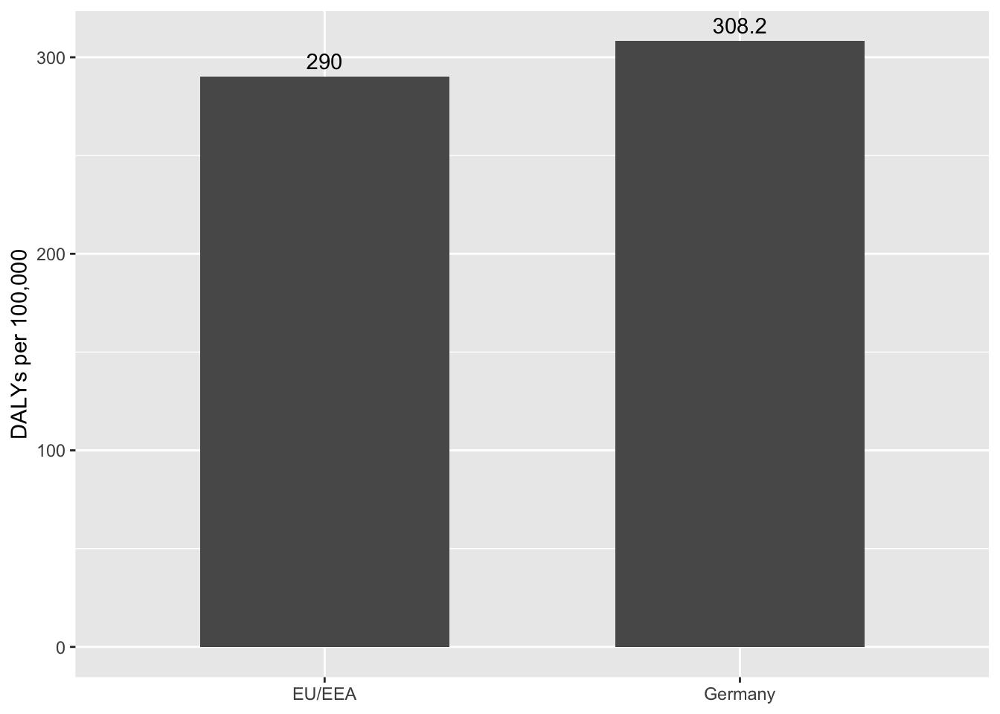

library(dplyr); library(ggplot2); library(tibble); library(knitr)
# Headline national totals (from Assignment 2)
cases <- 478222
deaths <- 16245
dalys <- 248920
# Per-100k rates (from Assignment 2)
hai_rates <- tribble(
~region, ~dalys_per_100k, ~deaths_per_100k,
"Germany", 308.2, 20.1,
"EU/EEA", 290.0, NA_real_
)
# Composition (from Assignment 2): HAP+BSI vs UTI vs others
burden <- tribble(
~infection, ~cases_share, ~dalys_share,
"HAP + BSI", "28%", "51%",
"UTI", "45%", "27%",
"Other (CDI+SSI)","27%", "22%"
)Problem
Healthcare-associated infections (HAIs) remained a major burden on hospital systems by causing long-term disability, especially in Germany. From the 2011 ECDC point-prevalence survey, enabled Germany to be analysed using a new methodology, the Burden of Healthcare-Associated Infections (BHAI) R package. This method translates prevalence into disability adjusted life years (DALYs), combining years of life lost (YLL) and years lived with disability (YLD), providing a clearer picture of population health impact.
The fundamental question is: How big is Germany’s HAI burden compared with EU/EEA average and what infection type drives it?
Data
Source: ECDC Point Prevalence Survey 2011–2012 capturing five HAIs: Clostridioides Difficile Infection (CDI), Hospital Acquired Pneumonia (HAP), Bloodstream Infection (BSI), Urinary Tract Infection (UTI), Surgical Site Infection (SSI) with 46 hospitals and 9,626 patients in Germany and 132 hospitals and 41,539 patients for EU/EEA Variables: Infection type, age, sex; outcomes: incidence, DALYs, deaths.
Method: Prevalence → incidence via modified Rhame–Sudderth; DALYs = YLL + YLD; infection-specific fatality probabilities. German McCabe severity unavailable; EU/EEA distribution used as proxy (adds uncertainty). :contentReferenceoaicite:4
Analysis
Germany’s DALY rate is 308.2 per 100,000 vs 290.0 in the EU/EEA (Figure 1).
Compositionally, HAP+BSI produce 51% of DALYs from 28% of cases, while UTI accounts for 45% of cases but 27% of DALYs (?@tbl-burden). :contentReferenceoaicite:5
ggplot(hai_rates, aes(region, dalys_per_100k)) +
geom_col(width = 0.6) +
geom_text(aes(label = dalys_per_100k), vjust = -0.5) +
labs(x = NULL, y = "DALYs per 100,000")
